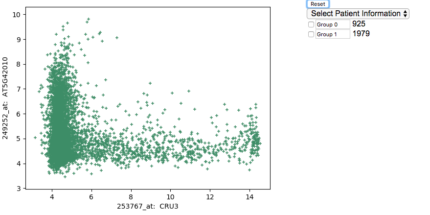
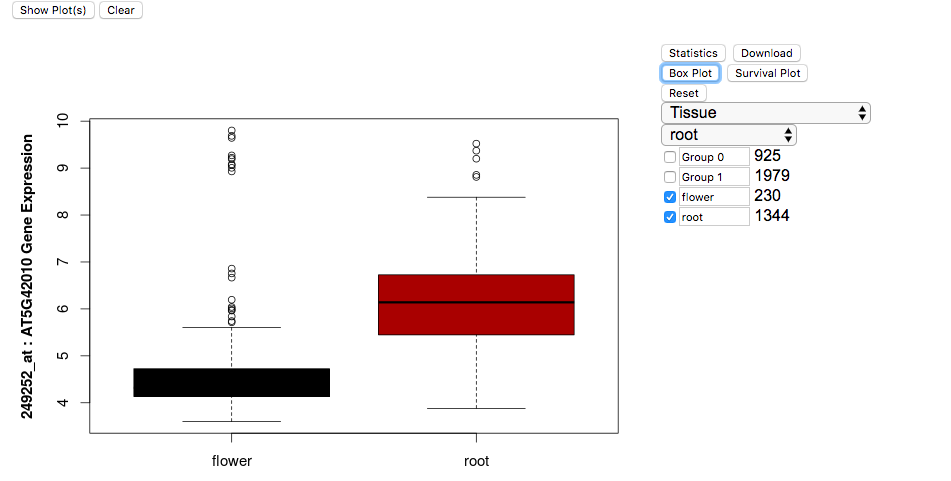
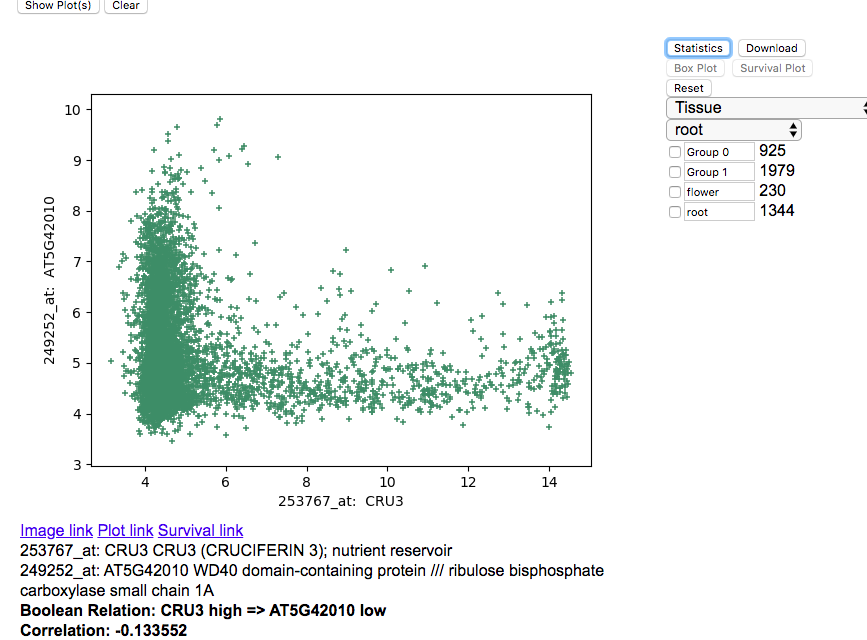

This website is designed to explore genomic and transcriptomic dataset
from plant. We have collected publicly available
microarray and RNASeq datasets to perform Boolean analysis on various genes.
Tutorial
For this tutorial, we will utilize the Arabidopsis thaliana
dataset to demonstrate how Hegemon works and the various tools you can use to explore the dataset.
The Home link above will take you to the home page where there are links to two
different tools to explore Arabidopsis thaliana datasets.
In the Home page there are links to the tool of
Hegemon scatterplot explorer
Hegemon scatterplot explorer links are identified by the following links in the
Home page:
- Explore Arabidopsis thaliana data
- Explore scatterplots between CRU3 and RBCS1A in Microarray data
- Explore scatterplots between CRU3 and RBCS1A in RNASeq data
HEGEMON scatterplot explorer
When you are on the home page this is what you can choose/see on the page as shown below:
- Select Dataset: select a dataset to analyze by using the dropdown menu.
- Gene A: Type a gene name in the textbox (Gene Symbol Name, Affymetrix ID or AGI code AT#G#####). Gene A is used in the X-axis of the scatterplot.
- Gene B: Type another gene name in the textbox (Gene Symbol Name, Affymetrix ID or AGI code AT#G#####). Gene B is used in the Y-axis of the scatterplot.
this button to make sure that a probe exists in the dataset.
- Show Plot: Shows scatterplots with all combinations of the probe IDs
between gene A and gene B. At this page the users can select their favorite
scatterplots by clicking mouse on the scatterplot. Once a
scatterplot is selected textboxes corresponding to
Gene A and Gene B are changed to reflect
the selection. An option to further explore will appear when "Show Plot" is clicked.
- Explore: Shows the selected scatterplot with a new set of tools on the
right.

- Selecting samples using Mouse to drag across points on the plot.

- Highlighting the samples using the checkbox on the left side of
"Group 0".
- Highlighting multiple groups using the checkbox on the left side of
"Group 0", "Group 1".

- Selecting Tissue Annotation: Click on the drop down menu "Select
Patient Information" and select "c Tissue".
- Selecting Root Samples: Click on the drop down menu "root" after selecting Tissue annotation above.

- Selecting Flower Samples: Click on the drop down menu "flower" after
selecting root samples above.

- Highlighting Root and Flower Samples: You can change the names of the
respective groups "Group 0" to "Root" and "Group 1" to "Flower". Click
on the checkbox to highlight them in the scatterplot.

- Boxplot of Root and Flower Samples: After selecting the checkbox on
the left side of "Root" and "Flower" click on the button "Box Plot" above.

- Statistics: To analyze the statistics of the dataset, click on "Statistics"
and information will appear below the scatterplot.

- Finding Correlations: After selecting the checkboxes for the groups selected,
click on "Correlation" and a plot will appear below the scatterplot. You can
enter in correlation values and click "Go" which will then display all of the points that are
correlated at that value.

- Survival Plot: After selecting the checkbox of groups, click on "Survival Plot" and the main scatterplot will be replacd with a new survival plot.
- Reseting groups: To reset the groups you created, click on "Reset" which will remove the groups.
- Download scatterplots, boxplots and results of different statistical tests: After selecting the checkbox on the left side of "Root" and "Flower" click on the button "Download" above. It opens a new page with a pdf file:
Hegemon-plots .
- Clear: Clears the plot and any exploring options that were selected before.
Software
Acknowledgement
Dr. Debashis Sahoo is supported by startup funds from the Department of Pediatrics at University of California San Diego, and a R00 grant from National Institute of Health, USA (R00CA151673).